保存sku、spu，feign遠程調用
SpringBoot微服務項目筆記-06
銷售屬性
- AttrController.java
- 獲取的API跟先前幾乎一樣，所以改造之前的
queryBasePageCatelogId，順便換名字
- 獲取的API跟先前幾乎一樣，所以改造之前的
/**
* 規格參數列表
*/
@GetMapping("/{attrType}/list/{catelogId}")
//@RequiresPermissions("product:attr:list")
public R baseAttrList(@RequestParam Map<String, Object> params,
@PathVariable("catelogId") Long catelogId,
@PathVariable("attrType") String attrType
) {
PageUtils page = attrService.queryBaseAttrPage(params, catelogId, attrType);
return R.ok().put("page", page);
}
- AttrServiceImpl.java
@Override
public PageUtils queryBaseAttrPage(Map<String, Object> params, Long catelogId, String attrType) {
QueryWrapper<AttrEntity> qw = new QueryWrapper<>();
// 判斷是要銷售還是基本屬性，1=基本，0=銷售
qw.eq("attr_type", "base".equalsIgnoreCase(attrType) ? 1 : 0);
- 順便修改保存方法

- 為了不留技術債(只有自己知道的神秘代號)，新增一個枚舉類來表示
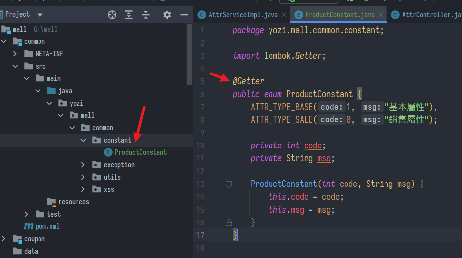
- 把剛剛用的1、0都換成
ProductConstant.ATTR_TYPE_BASE.getCode() - 查詢、修改的方法也都判斷一下是基本屬性才往下做
分組關聯
- 接口API:
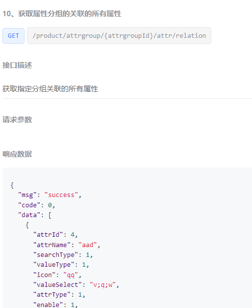
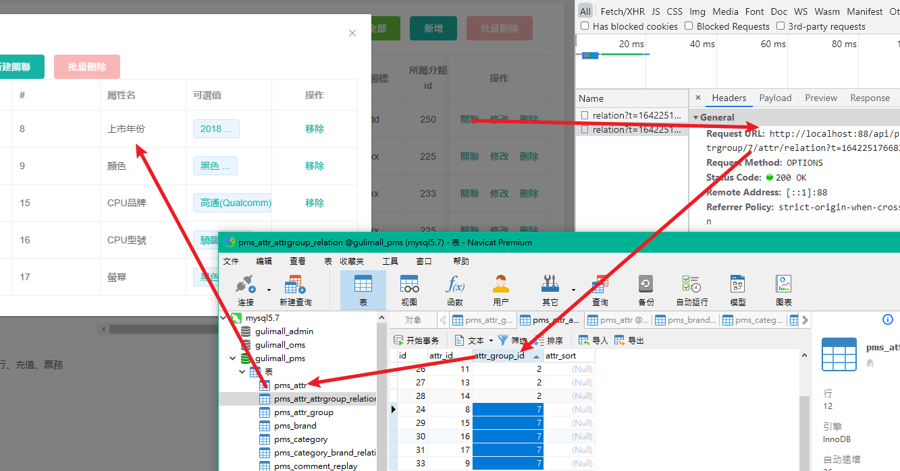
- 沒有多的屬性，可以直接用AttrEntity作為DATA返回
- AttrGroupController.java
- 注意調用的是
attrService
- 注意調用的是
/**
* 根據分組ID查找關聯
*
* @param attrgroupId
* @return
*/
@GetMapping("/{attrgroupId}/attr/relation")
public R attrRelation(@PathVariable("attrgroupId") Long attrgroupId) {
List<AttrEntity> entities = attrService.getAttrRelation(attrgroupId);
return R.ok().put("data", entities);
}
- AttrServiceImpl.java
@Override
public List<AttrEntity> getAttrRelation(Long attrgroupId) {
List<AttrAttrgroupRelationEntity> relationEntities =
relationDao.selectList(new QueryWrapper<AttrAttrgroupRelationEntity>().eq("attr_group_id",
attrgroupId));
// 收集出attrId
List<Long> longList =
relationEntities.stream().map(AttrAttrgroupRelationEntity::getAttrId).collect(Collectors.toList());
if (longList == null || longList.size() == 0) {
return null;
}
return this.listByIds(longList);
}
移除
就剛剛上面圖，點開關連旁邊的移除
- API:
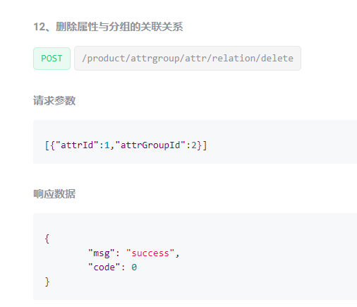
- 業務上為了保持前後端溝通少、整齊，造一個Vo來接
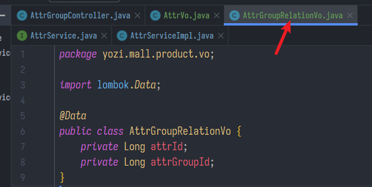
- AttrGroupController.java
- 參數由於是自訂的的類，在HTTP用JSON傳遞，切記要加@RequestBody
/**
* 删除
*/
@PostMapping("/attr/relation/delete")
public R delete(@RequestBody AttrGroupRelationVo[] vos) {
attrService.deleteRelation(vos);
return R.ok();
}
- AttrServiceImpl.java
- 由於要批量刪除，造一個自訂的SQL
batchDelete方法
- 由於要批量刪除，造一個自訂的SQL
@Override
public void deleteRelation(AttrGroupRelationVo[] vos) {
// 無情將VO再轉回來 哭R
List<AttrAttrgroupRelationEntity> entities = Arrays.stream(vos).map(item -> {
AttrAttrgroupRelationEntity relationEntity = new AttrAttrgroupRelationEntity();
BeanUtils.copyProperties(item, relationEntity);
return relationEntity;
}).collect(Collectors.toList());
relationDao.batchDelete(entities);
}
- AttrAttrgroupRelationDao.java
- 莫忘記加@Param(“entities”)
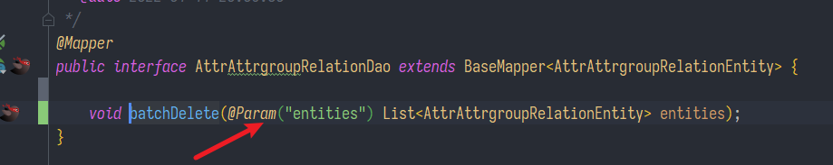
- AttrAttrgroupRelationDao.xml
- 動態SQL的寫法，foreach循環，間隔符號
" OR "前後記得都要空格 - 寫xml的SQL特別小心拚錯誤
- 動態SQL的寫法，foreach循環，間隔符號
<delete id="batchDelete">
DELETE
FROM pms_attr_attrgroup_relation WHERE
<foreach collection="entities" item="item" separator=" OR ">
attr_id = #{item.attrId} AND attr_group_id = #{item.attrGroupId}
</foreach>
</delete>
新建關聯
超級難點，套太多層了要想很久
- 先做新建時要跳出的可選項API:
/product/attrgroup/{attrgroupId}/noattr/relation
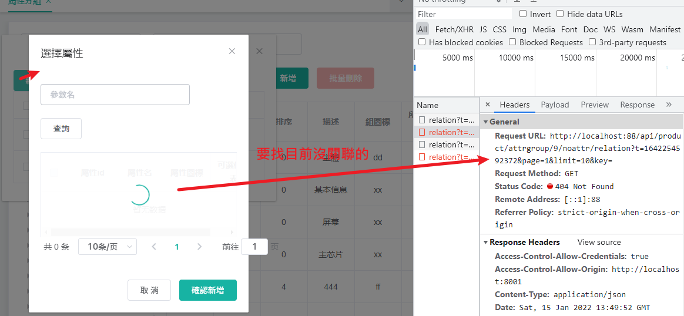
- AttrGroupController.java
/**
* 根據分組ID查找無關聯(新增時逆向篩選用)
*/
@GetMapping("/{attrgroupId}/noattr/relation")
public R attrNoRelation(@RequestParam Map<String, Object> params,
@PathVariable("attrgroupId") Long attrgroupId) {
PageUtils page = attrService.getAttrNoRelation(params, attrgroupId);
return R.ok().put("page", page);
}
- AttrServiceImpl.java
- 防空指針寫一堆not null，還以為在寫golang
@Override
public PageUtils getAttrNoRelation(Map<String, Object> params, Long attrgroupId) {
// 只查自己所屬分類中的屬性
AttrGroupEntity attrGroupEntity = attrGroupDao.selectById(attrgroupId);
// 獲取當前分類的id
Long catelogId = attrGroupEntity.getCatelogId();
// 只關連沒引用的屬性，這裡用排除法把已經被關聯的ID找出來，這是用來存排除的清單
List<Long> alreadyInGroupIdList = new ArrayList<>();
// 先找出當前分類下的其他分組
List<AttrGroupEntity> attr_groups = attrGroupDao.selectList(new QueryWrapper<AttrGroupEntity>().eq(
"catelog_id"
, catelogId));
List<Long> attr_group_ids =
attr_groups.stream().map(AttrGroupEntity::getAttrGroupId).collect(Collectors.toList());
// 現在獲取到可能很多個attr_group_id，一個attr_group_id又會對應多個attr_id
if (attr_group_ids != null && attr_group_ids.size() > 0) {
// 到pms_attr_attrgroup_relation，拿attr_group_id找出對應的relationEntities
List<AttrAttrgroupRelationEntity> relationEntities =
relationDao.selectList(new QueryWrapper<AttrAttrgroupRelationEntity>().in("attr_group_id",
attr_group_ids));
// 這些relationEntities有attr_group_id，表示他的attr_id已經在某個分組內了
if (relationEntities != null && relationEntities.size() > 0) {
// 把其中的ID一個一個找出來，這些是要排除的
alreadyInGroupIdList =
relationEntities.stream().map(AttrAttrgroupRelationEntity::getAttrId).collect(Collectors.toList());
}
}
// 可以開查了
QueryWrapper<AttrEntity> queryWrapper = new QueryWrapper<AttrEntity>();
// 如果有要排除的
if (alreadyInGroupIdList != null && alreadyInGroupIdList.size() > 0) {
// 只查自己所屬分類中的屬性，移除掉要排除的，而且只要基本屬性
queryWrapper.eq("catelog_id", catelogId).notIn("attr_id", alreadyInGroupIdList).eq("attr_type",
ProductConstant.ATTR_TYPE_BASE.getCode());
} else {
// 只查自己所屬分類中的屬性，而且只要基本屬性
queryWrapper.eq("catelog_id", catelogId).eq("attr_type", ProductConstant.ATTR_TYPE_BASE.getCode());
}
// 前端要的是page，還可能要查key
String key = (String) params.get("key");
if (!StringUtils.isEmpty(key)) {
queryWrapper.and(qw -> {
qw.eq("attr_id", key).or().like("attr_name", key);
});
}
IPage<AttrEntity> page = this.page(new Query<AttrEntity>().getPage(params),
queryWrapper);
PageUtils pageUtils = new PageUtils(page);
return pageUtils;
}
-
修復前端頁面一個小bug，在attr-add-or-update.vue
-
首先他dataForm.attrId ? ‘新增’ : ‘修改’“本來綁的是.id，顯然錯誤(另一個也是這樣)，修改時沒有正確顯示標題
-
另外就是下面開關的，valueType是String類型，結果綁了冒號就怪怪的，點修改時不會動態跟隨傳過去的"1"或"0"而改變
-
而且這個順序不對連文字顏色都會怪怪的
-

保存
- API:
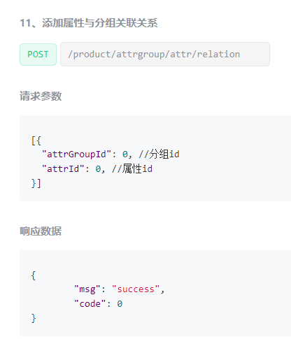
- AttrGroupController.java
@RequestBody不僅能裝成[]也可以直接裝到List<>
/**
* 新增保存
*/
@RequestMapping("/attr/relation")
//@RequiresPermissions("product:attrgroup:save")
public R addAttrGroupRelation(@RequestBody List<AttrGroupRelationVo> vos) {
relationService.addAttrGroupRelation(vos);
return R.ok();
}
- AttrAttrgroupRelationServiceImpl.java
@Override
public void addAttrGroupRelation(List<AttrGroupRelationVo> vos) {
List<AttrAttrgroupRelationEntity> collect = vos.stream().map(e -> {
// 一樣，轉存
AttrAttrgroupRelationEntity relationEntity = new AttrAttrgroupRelationEntity();
BeanUtils.copyProperties(e, relationEntity);
return relationEntity;
}).collect(Collectors.toList());
// 調用原生批量保存
this.saveBatch(collect);
}
- 修改前面queryBaseAttrPage方法
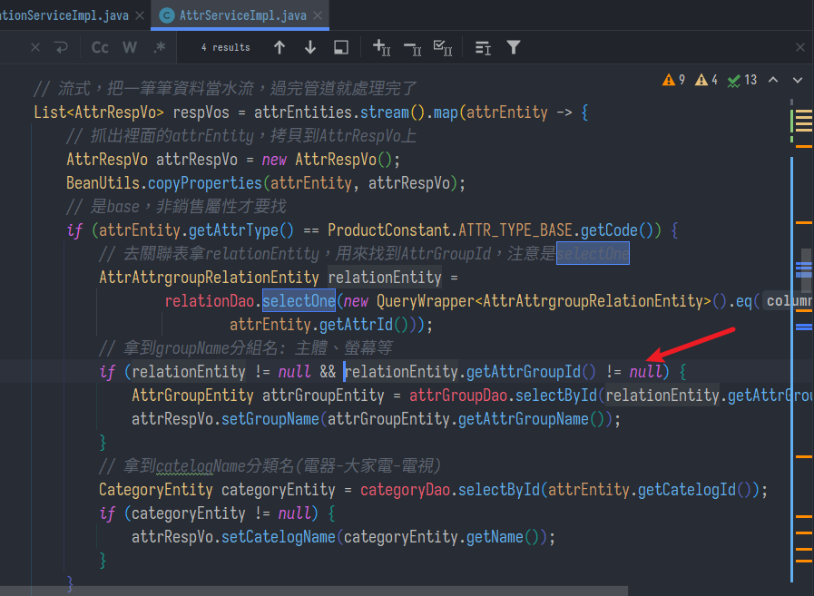
- 還有保存關聯關係的
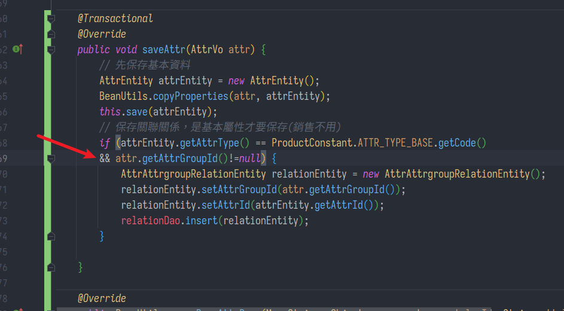
刪除屬性時刪除關聯
-
有個漏洞，屬性被刪掉之後pms_attr_attrgroup_relation中的attr_id卻沒刪，雖然不會導致錯誤但會讓表中存在廢物資料
-
嘗試自己完善功能，AttrController.java
/**
* 刪除
*/
@RequestMapping("/delete")
//@RequiresPermissions("product:attr:delete")
public R delete(@RequestBody Long[] attrIds) {
attrService.removeAttrAndRelationByIds(Arrays.asList(attrIds));
return R.ok();
}
- AttrServiceImpl.java
- 結果第一次做又中了空指針，記住這些
xxDao.select一但查了就不會是null，而是可能返回內容為空的List - 要用長度判斷，切記切記
- 結果第一次做又中了空指針，記住這些
@Override
public void removeAttrAndRelationByIds(List<Long> asList) {
this.removeByIds(asList);
// 還要移除關聯
List<AttrAttrgroupRelationEntity> entities =
relationDao.selectList(new QueryWrapper<AttrAttrgroupRelationEntity>().in("attr_id", asList));
if (entities != null && entities.size() > 0) {
relationDao.batchDelete(entities);
}
}
新增商品頁面
先處裡新增時需要找到該品項相關資訊的API
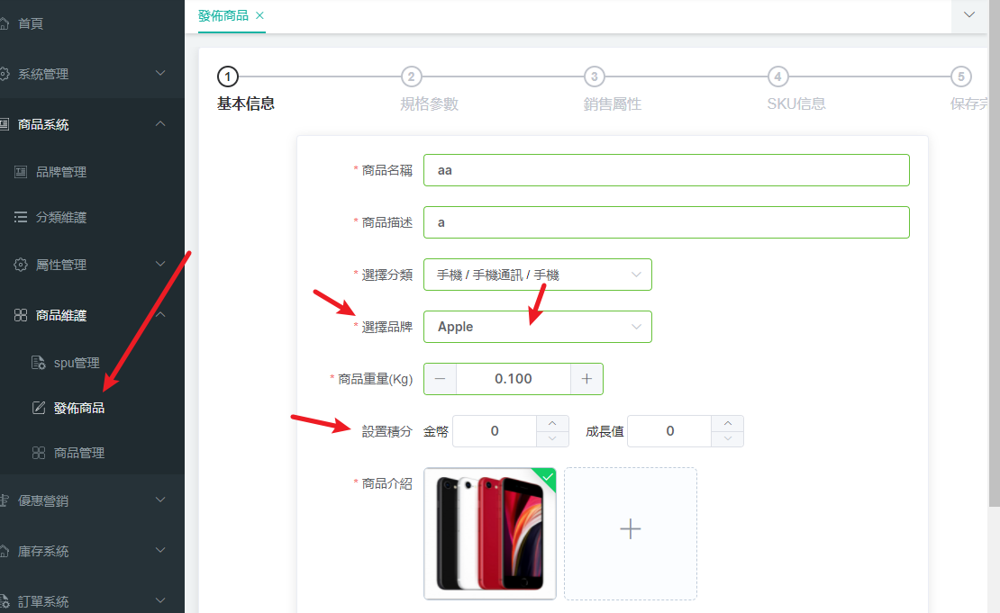
- 新增商品需要獲取會員等級，
/api/member/memberlevel/ - 先到會員模組調整網關，增加member_route規則
- id: member_route
uri: lb://member
predicates:
- Path=/api/member/**
filters:
- RewritePath=/api/(?<segment>.*),/$\{segment}
- 會員模組的操作大部分比較單純，內建生成的暫時夠用
- 隨便新增兩個會員等級
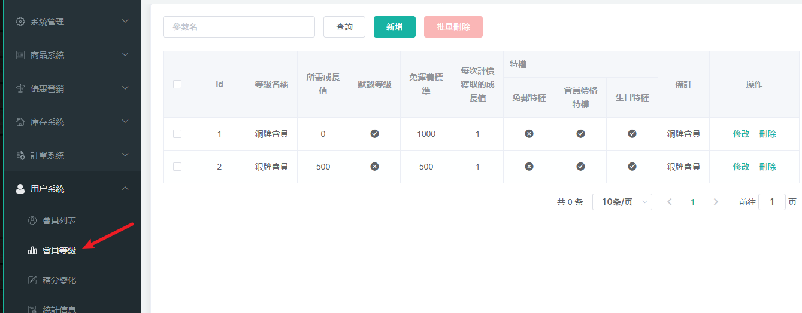
根據分類返回關聯的品牌
- API:
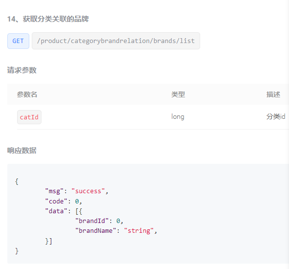
- 返回的data很簡單，造一個Vo節省流量
- BrandVo.java
@Data
public class BrandVo {
private Long brandId;
private String brandName;
}
- CategoryBrandRelationController.java
- Controller用來處理請求、檢驗資料、封裝
/**
* 根據catId返回關聯的品牌
*/
@GetMapping("/brands/list")
public R list(@RequestParam("catId") Long catId) {
List<BrandEntity> vos = categoryBrandRelationService.getBrandsByCatId(catId);
List<BrandVo> list = vos.stream().map(e -> {
BrandVo brandVo = new BrandVo();
brandVo.setBrandId(e.getBrandId);
brandVo.setBrandName(e.getBrandName);
return brandVo;
}).collect(Collectors.toList());
return R.ok().put("data", list);
}
- CategoryBrandRelationServiceImpl.java
- Service層寫業務邏輯，這邊雖然看起來白繞圈還循環查表，但卻是為了維護性與擴展性考量，多學習老師的思路總是好的
@Override
public List<BrandEntity> getBrandsByCatId(Long catId) {
List<CategoryBrandRelationEntity> relationEntities =
baseMapper.selectList(new QueryWrapper<CategoryBrandRelationEntity>().eq("catelog_id", catId));
List<BrandEntity> collect = relationEntities.stream().map(e -> {
Long brandId = e.getBrandId();
// 調用Service而非DAO，因為DAO是生成的最好寫死的
return brandService.getById(brandId);
}).collect(Collectors.toList());
return collect;
}
獲取規格參數
- API:
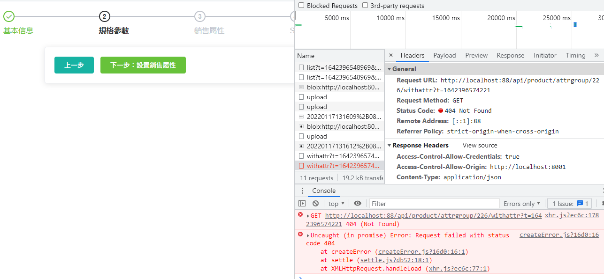
- 要返回的是AttrGroup且裡面包含組內的屬性
"data": [{
"attrGroupId": 1,
"attrGroupName": "主体",
"sort": 0,
"descript": "主体",
"icon": "dd",
"catelogId": 225,
"attrs": [{
"attrId": 7,
"attrName": "入网型号",
"searchType": 1,
"valueType": 0,
"icon": "xxx",
"valueSelect": "aaa;bb",
"attrType": 1,
"enable": 1,
"catelogId": 225,
"showDesc": 1,
"attrGroupId": null
}, {
...
},
{
"attrGroupId": 2,
...
- 造一個VO
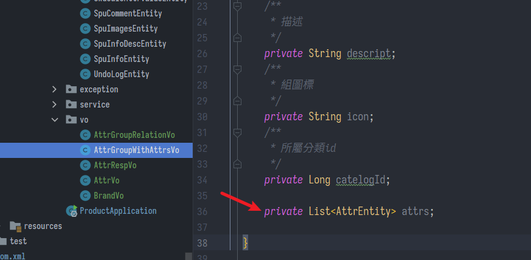
- AttrGroupController.java
- 參數本身在URL的
/~/中用@PathVariable - 在
?號後面的用@RequestParam - 控制層方法名取"想要返回的東西”
- 服務層方法名後面再加上"傳入的參數"
- 參數本身在URL的
/**
* 新增商品獲取規格參數
*/
@GetMapping("/{catelogId}/withattr")
public R getAttrGroupWithAttrs(@PathVariable("catelogId") Long catelogId) {
List<AttrGroupWithAttrsVo> vos = attrGroupService.getAttrGroupWithAttrsByCatelogId(catelogId);
return R.ok().put("data", vos);
}
- AttrGroupServiceImpl.java
@Override
public List<AttrGroupWithAttrsVo> getAttrGroupWithAttrsByCatelogId(Long catelogId) {
List<AttrGroupEntity> attrGroupEntities = this.list(new QueryWrapper<AttrGroupEntity>().eq("catelog_id",
catelogId));
List<AttrGroupWithAttrsVo> collect = attrGroupEntities.stream().map(e -> {
AttrGroupWithAttrsVo attrGroupWithAttrsVo = new AttrGroupWithAttrsVo();
BeanUtils.copyProperties(e, attrGroupWithAttrsVo);
// 獲取attrs，用之前寫過的方法從分組ID就能找到
List<AttrEntity> attrEntityList = attrService.getAttrRelation(e.getAttrGroupId());
// 裝進VO
attrGroupWithAttrsVo.setAttrs(attrEntityList);
return attrGroupWithAttrsVo;
}).collect(Collectors.toList());
return collect;
}
- 回前端補一個非空判斷
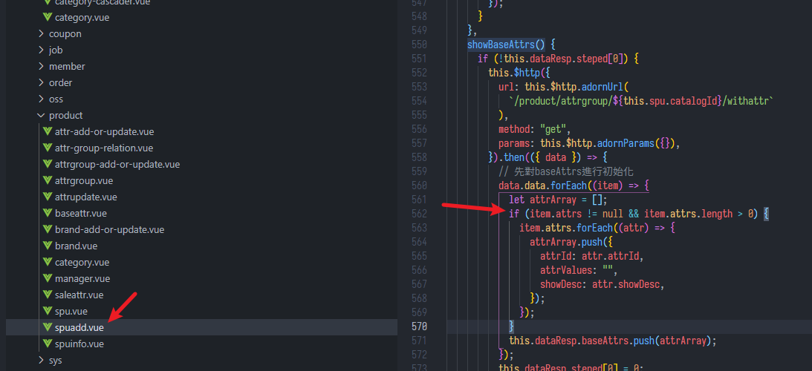
- 成功，話說這個前端頁面還蠻屌的，可選項沒有甚至還能現加，還好教材做了不然自己來肯定又要搞半天
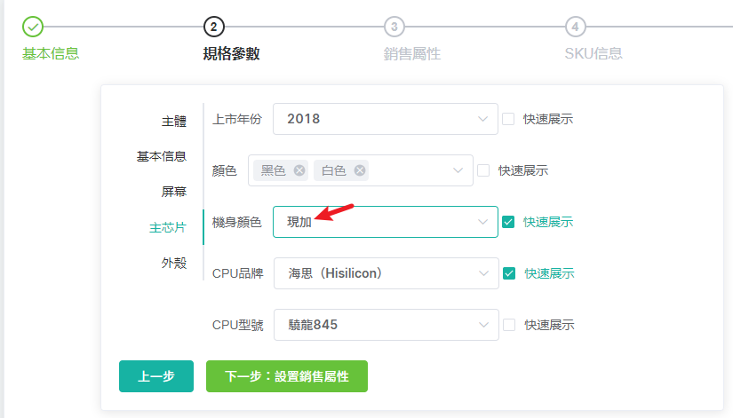
- 後面兩步都沒問題，前端頁面都做好了，會根據銷售屬性算出笛卡爾積，可以詳細針對每個SKU做設定
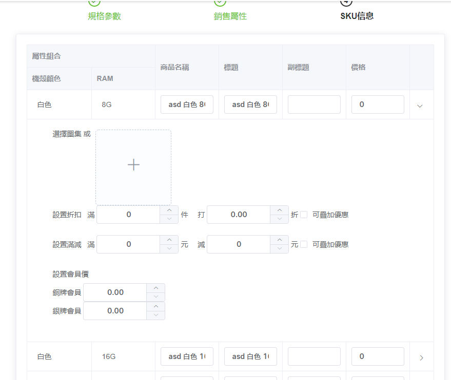
- 點選發佈，會產生一串很長的JSON，接下來就到保存了
保存商品
- 保存商品要調用商品模組、會員模組，不僅要跨模組，還涉及非常多張表，只能一點一點拆開來做了
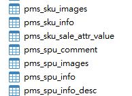
從JSON生成POJO
顯然自己手動造VO太累了，有更快的方法
- API:
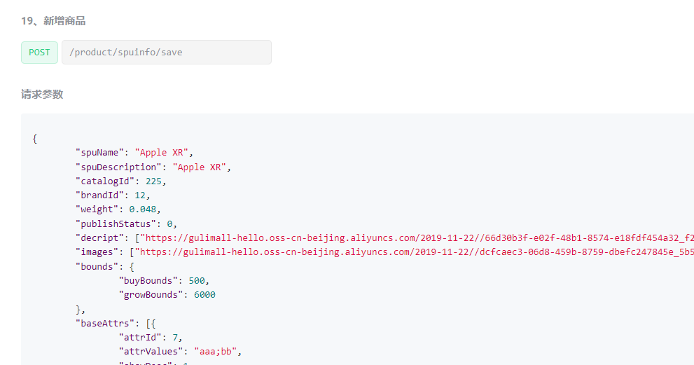
- 把API文檔直接丟給插件解析，我使用插件RoboPOJOGenerator
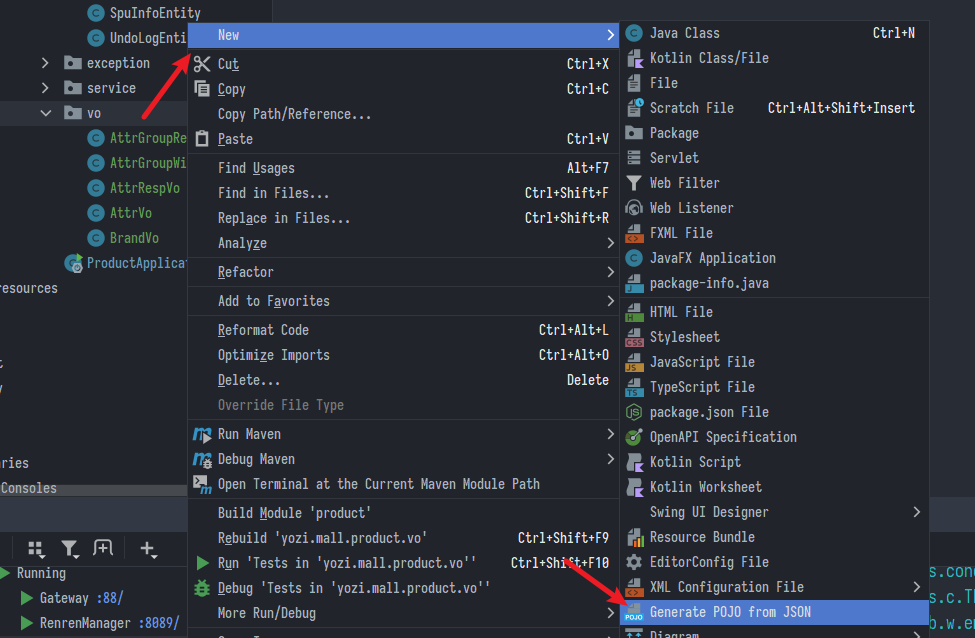
- 選框架、命名，自動生成POJO
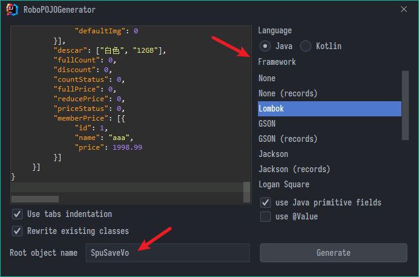
- 但是要注意生成的數字類型，如果是金錢等要求精度的，手動換成
BigDecimal - 並且資料庫中都是Long類型，把相關的Int也都換掉
開始保存
- SpuInfoController.java
/**
* 保存SpuSaveVo
*/
@RequestMapping("/save")
public R save(@RequestBody SpuSaveVo vo) {
spuInfoService.saveSpuInfo(vo);
return R.ok();
}
- SpuInfoServiceImpl.java
@Transactional(rollbackFor = Exception.class)
@Override
public void saveSpuInfo(SpuSaveVo vo) {
// 1、保存spu基本信息：pms_spu_info
SpuInfoEntity spuInfoEntity = new SpuInfoEntity();
BeanUtils.copyProperties(vo, spuInfoEntity);
spuInfoEntity.setCreateTime(new Date());
spuInfoEntity.setUpdateTime(new Date());
this.save(spuInfoEntity);
// 2、保存spu的描述圖片：pms_spu_info_desc
// 這個decript錯字來自前端...算了就照它的吧
List<String> decript = vo.getDecript();
SpuInfoDescEntity spuInfoDescEntity = new SpuInfoDescEntity();
spuInfoDescEntity.setSpuId(spuInfoEntity.getId());
// 用逗號分隔多張描述圖片，描述圖片就是購物時左上那些摸過去會放大的小圖
// String.join方法可以自動遍歷數組中的String然後拼接成一個String
spuInfoDescEntity.setDecript(String.join(",", decript));
spuInfoDescService.save(spuInfoDescEntity);
// 3、保存spu的圖片集：pms_spu_images，
// 圖片集就是往下拉，在頁面中央出現的多張商品宣傳大圖
List<String> images = vo.getImages();
spuImagesService.saveImages(spuInfoEntity.getId(), images);
// 4、保存spu的規格參數：pms_product_attr_value
List<BaseAttrsItem> baseAttrs = vo.getBaseAttrs();
List<ProductAttrValueEntity> collect = baseAttrs.stream().map(attr -> {
ProductAttrValueEntity valueEntity = new ProductAttrValueEntity();
valueEntity.setAttrId(attr.getAttrId());
// 查詢attr屬性名
AttrEntity byId = attrService.getById(attr.getAttrId());
valueEntity.setAttrName(byId.getAttrName());
valueEntity.setAttrValue(attr.getAttrValues());
valueEntity.setQuickShow(attr.getShowDesc());
valueEntity.setSpuId(spuInfoEntity.getId());
return valueEntity;
}).collect(Collectors.toList());
productAttrValueService.saveBatch(collect);
// 6、保存spu的積分信息：gulimall_sms--->sms_spu_bounds
Bounds bounds = vo.getBounds();
SpuBoundsTo spuBoundsTo = new SpuBoundsTo();
BeanUtils.copyProperties(bounds, spuBoundsTo);
spuBoundsTo.setSpuId(spuInfoEntity.getId());
R r = couponFeignService.saveSpuBounds(spuBoundsTo);
if (r.getCode() != 0) {
log.error("遠程保存spu積分失敗");
}
// 5、保存當前spu對應的所有sku信息：pms_sku_info
List<SkusItem> skus = vo.getSkus();
if (skus != null && skus.size() > 0) {
skus.forEach(item -> {
// 傳來的是多個skus，遍歷一個一個處理
// 5、1）、sku的基本信息:pms_sku_info
// 如果有設定預設圖片
String defaultImg = "";
for (ImagesItem image : item.getImages()) {
if (image.getDefaultImg() == 1) {
defaultImg = image.getImgUrl();
}
}
// 準備存到pms_sku_info表
SkuInfoEntity skuInfoEntity = new SkuInfoEntity();
BeanUtils.copyProperties(item, skuInfoEntity);
skuInfoEntity.setBrandId(spuInfoEntity.getBrandId());
// 資料庫中又是這個錯字CatalogId，之前被坑好久
skuInfoEntity.setCatalogId(spuInfoEntity.getCatalogId());
skuInfoEntity.setSaleCount(0L);
skuInfoEntity.setSpuId(spuInfoEntity.getId());
skuInfoEntity.setSkuDefaultImg(defaultImg);
skuInfoService.save(skuInfoEntity);
Long skuId = skuInfoEntity.getSkuId();
// 5、2）、sku的圖片信息：pms_sku_images，這張表中的條目是基於skuId
// 因為一個skuId可以有多張圖片
List<SkuImagesEntity> imagesEntities = item.getImages().stream().map(img -> {
SkuImagesEntity skuImagesEntity = new SkuImagesEntity();
skuImagesEntity.setSkuId(skuId);
skuImagesEntity.setImgUrl(img.getImgUrl());
skuImagesEntity.setDefaultImg(img.getDefaultImg());
return skuImagesEntity;
}).filter(entity -> {
// filter返回true就是需要留下的，false就是剔除的
return !StringUtils.isEmpty(entity.getImgUrl());
}).collect(Collectors.toList());
// 批量保存到pms_sku_images
skuImagesService.saveBatch(imagesEntities);
// 5、3）、sku的銷售屬性：pms_sku_sale_attr_value
// 就是因為銷售屬性的笛卡爾積導致有多個sku，這張表保存了某個skuId對應的屬性具體是啥值
// 例如顏色是黑色，RAM是8G
List<AttrItem> attr = item.getAttr();
List<SkuSaleAttrValueEntity> skuSaleAttrValueEntities = attr.stream().map(a -> {
SkuSaleAttrValueEntity skuSaleAttrValueEntity = new SkuSaleAttrValueEntity();
BeanUtils.copyProperties(a, skuSaleAttrValueEntity);
skuSaleAttrValueEntity.setSkuId(skuId);
return skuSaleAttrValueEntity;
}).collect(Collectors.toList());
// 批量保存到pms_sku_sale_attr_value
skuSaleAttrValueService.saveBatch(skuSaleAttrValueEntities);
// 5、4）、sku的優惠、滿減等信息：gulimall_sms--->sms_sku_ladder、sms_sku_full_reduction、sms_member_price
SkuReductionTo skuReductionTo = new SkuReductionTo();
BeanUtils.copyProperties(item, skuReductionTo);
skuReductionTo.setSkuId(skuId);
// 有設定打折規則再保存，省得資料庫中存一堆0
if (skuReductionTo.getFullCount() > 0 || skuReductionTo.getFullPrice().compareTo(BigDecimal.ZERO) == 1) {
R r1 = couponFeignService.saveSkuReduction(skuReductionTo);
if (r1.getCode() != 0) {
log.error("遠程保存sku優惠資訊失敗");
}
}
});
}
- SpuImagesServiceImpl.java
- saveImages方法是每張圖片有自己的一個
SpuImagesEntity
- saveImages方法是每張圖片有自己的一個
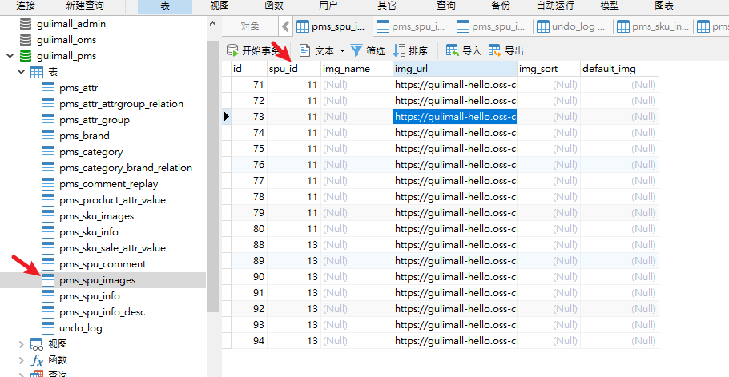
@Override
public void saveImages(Long id, List<String> images) {
if (images != null && images.size() > 0) {
// 要存成多條紀錄
List<SpuImagesEntity> collect = images.stream().map(e -> {
SpuImagesEntity spuImagesEntity = new SpuImagesEntity();
spuImagesEntity.setSpuId(id);
spuImagesEntity.setImgUrl(e);
return spuImagesEntity;
}).collect(Collectors.toList());
this.saveBatch(collect);
}
}
遠程調用feign
複習一下步驟:
- 導依賴spring-cloud-starter-openfeign
- 在common模組造feign包，包下放接口
- 接口上註解
@FeignClient("要被調用的服務名") - 把要被調用的方法完整URL寫上(可以去目標controller直接偷)
- 範例: CouponFeignService.java
- 接口上註解
@FeignClient("coupon")
public interface CouponFeignService {
// 上傳商品時，保存 遠程調用的積分訊息
@PostMapping("/coupon/spubounds/save")
R saveSpuBounds(@RequestBody SpuBoundsTo spuBoundsTo);
// 相當於 R save(@RequestBody SpuBoundsEntity spuBounds)
// 因為都是轉成JSON在傳送，轉回來屬性能對上就行
// 上傳商品時，保存 遠程調用的滿減、會員優惠訊息
@PostMapping("/coupon/skufullreduction/saveinfo")
R saveSkuReduction(@RequestBody SkuReductionTo skuReductionTo);
}
- 回到要調用別人的啟動類，註解掃描
.common.feign包
@EnableFeignClients(basePackages = "yozi.mall.common.feign")
public class ProductApplication {
To類
Transfer Object
- 通常放在common模組下
- 用於服務間傳遞物件，例如: SkuReductionTo.java
@Data
public class SkuReductionTo {
private Long skuId;
// 打幾折
private BigDecimal discount;
private Integer priceStatus;
private BigDecimal fullPrice;
private BigDecimal reducePrice;
private Integer countStatus;
// 滿幾件
private Integer fullCount;
private List<MemberPriceItem> memberPrice;
}
- 其實feign是轉成JSON在傳送，轉回來屬性能對上就行
- 但是要注意JSON轉化的規則，有時候不同依賴提供的JSON編碼有細小差異可能就會造成BUG
- 這邊總共遠程調用了2個服務，第一個spu積分沒啥特別的，直接灌給生成的save方法就好
- 第二個sku的滿減、會員優惠就很坑了，因為To中的屬性與目標地要保存的Entity有些對不上，於是才要自創saveInfo方法
- SkuFullReductionServiceImpl.java
- 善用快速產生setter的插件
@Override
public void saveInfo(SkuReductionTo skuReductionTo) {
// 保存階梯優惠
if (skuReductionTo.getFullCount() > 0) {
SkuLadderEntity skuLadderEntity = new SkuLadderEntity();
skuLadderEntity.setSkuId(skuReductionTo.getSkuId());
skuLadderEntity.setFullCount(skuReductionTo.getFullCount());
skuLadderEntity.setDiscount(skuReductionTo.getDiscount());
skuLadderEntity.setAddOther(skuReductionTo.getCountStatus());
skuLadderService.save(skuLadderEntity);
}
// 保存滿減優惠
if (skuReductionTo.getFullPrice().compareTo(BigDecimal.ZERO) > 0) {
SkuFullReductionEntity fullReductionEntity = new SkuFullReductionEntity();
fullReductionEntity.setSkuId(skuReductionTo.getSkuId());
fullReductionEntity.setFullPrice(skuReductionTo.getFullPrice());
fullReductionEntity.setReducePrice(skuReductionTo.getReducePrice());
fullReductionEntity.setAddOther(skuReductionTo.getCountStatus());
this.save(fullReductionEntity);
}
// 保存會員優惠
List<MemberPriceEntity> collect = skuReductionTo.getMemberPrice().stream().map(e -> {
MemberPriceEntity memberPriceEntity = new MemberPriceEntity();
memberPriceEntity.setSkuId(skuReductionTo.getSkuId());
memberPriceEntity.setMemberLevelId(e.getId());
memberPriceEntity.setMemberLevelName(e.getName());
memberPriceEntity.setMemberPrice(e.getPrice());
// 預設可疊加會員優惠
memberPriceEntity.setAddOther(1);
return memberPriceEntity;
}).filter(e -> e.getMemberPrice().compareTo(BigDecimal.ZERO) > 0).collect(Collectors.toList());
memberPriceService.saveBatch(collect);
}
知識點
-
String.join遍歷數組中的String，拼接成一個長的String
-
手動設定id的屬性，非自增要加註解(mybatisPlus預設會自增)
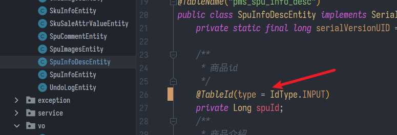
- 在流中使用過濾器
.filter(entity -> {
// filter返回true就是需要留下的，false就是剔除的
return !StringUtils.isEmpty(entity.getImgUrl());
- BigDecimal的比較與判斷
- A.compareTo(B)，返回1表示A比B大，返回0表示相等，返回-1表示A比B小
- 判斷BigDecimal xxx是否> 0 :
- 幹對阿==1不就 > 0，直接用>0還比較好讀
xxx.compareTo(BigDecimal.ZERO) == 1 或 > 0
Debug小技巧
- 快速導出HTTP請求到postman
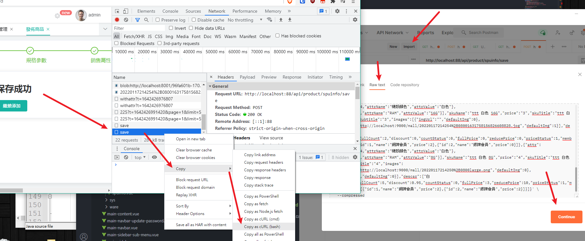
- 縮減F12不需要顯示的區塊
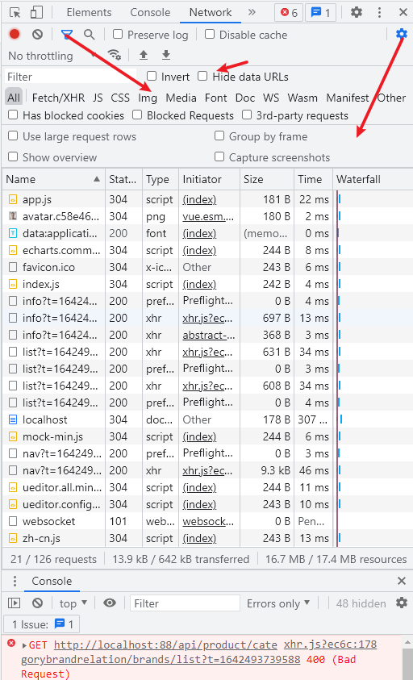
- 讓mybatis-plus輸出log到控制台，application.properties
mybatis-plus.configuration.log-impl=org.apache.ibatis.logging.stdout.StdOutImpl
- Compound批次啟動服務
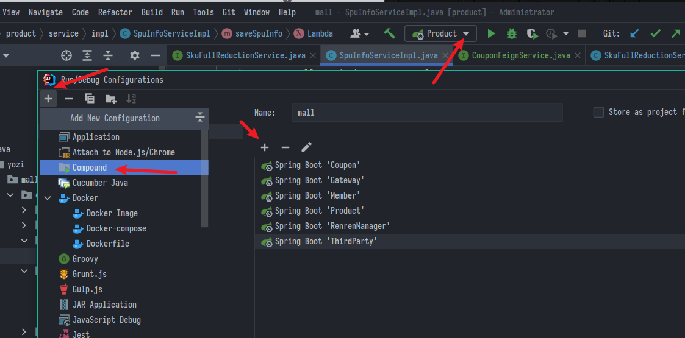
- -Xmx設定最大占用記憶體
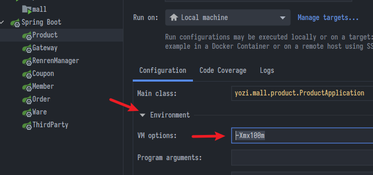
- 設置斷點
- 要查看的物件直接點灰字可以展開詳細
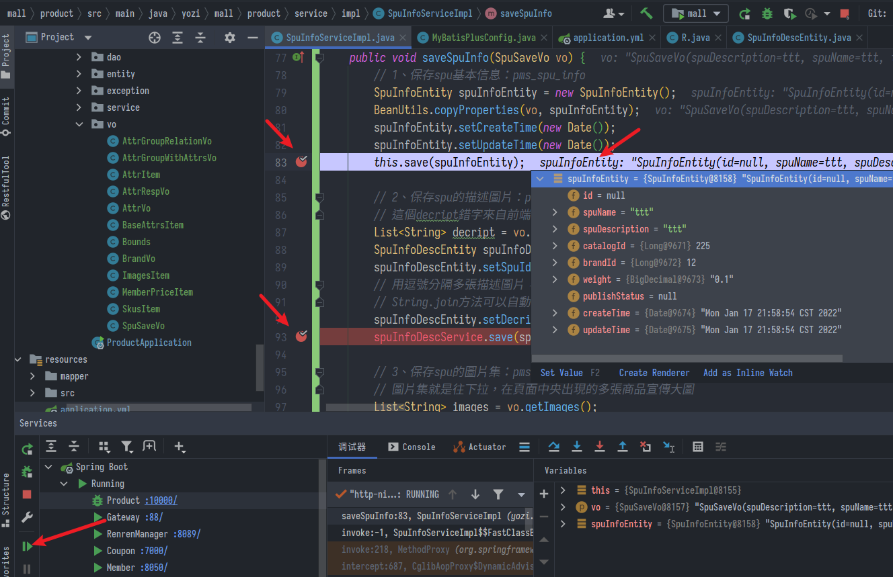
- 使用F8下一步，或設好下一個斷點直接按左下的快進(F9)
上次修改於 2022-01-23